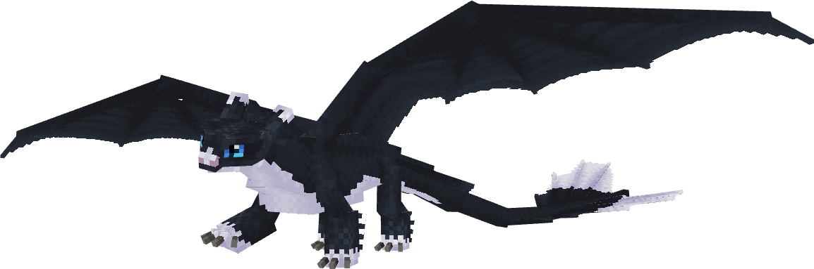
Night Light
l'hybride né apprivoiséDescription
§ 1Issu du croisement Night Fury × Light Fury, le Night Light naît déjà allié à son éleveur.
Aucune potion, aucun combat — simplement la patience d'un éleveur. Sa palette mêle le noir profond du père au blanc lunaire de la mère.
Onze variantes connues, dont trois célèbres nommées d'après les rejetons de Toothless : Pouncer, Ruffrunner, et Dart.
Capacités
§ 2Plasma Blast
Hérité de ses deux parents — tir d'énergie chargeable, dégâts intermédiaires.
Invisibility
Hérité de la Light Fury. Camouflage temporaire utilisable comme capacité offensive ou défensive.
Apprivoisement
§ 3Hors-tier — Le don de naissance.
Aucun rituel. Le Night Light naît allié à l'éleveur des deux parents. Il peut être nourri avec saumon/morue/poisson tropical pour la régénération.
- Apprivoise un Night Fury et une Light Fury.
- Donne du rayon de miel aux deux pour les mettre en mode reproduction.
- Ils se reproduisent — un œuf de Night Light apparaît.
- L'œuf éclôt après 40 minutes : le bébé est déjà ton allié.
Reproduction
§ 4Night Light × Night Fury/Light Fury : œuf de Night Fury/Light Fury (pas d'hybride en retour).
Habitat
§ 5Aucun spawn naturel. Le Night Light n'apparaît que par reproduction — seul dragon absent de la config de spawn du mod.
Variantes (11)
§ 6Les variantes 3-5 (Leopard, Dusk, Appaloosa) n'apparaissent que par reproduction — non accessibles via /summon.
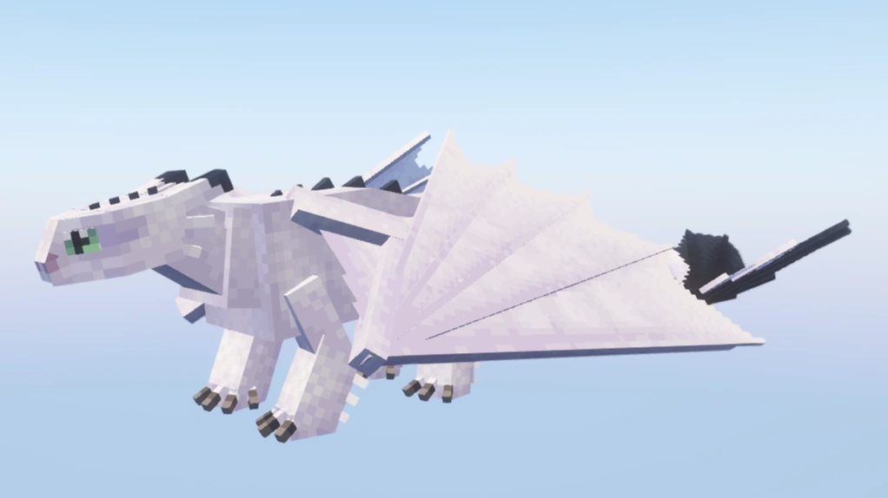
Variant 1
Pouncer
Tigré ; rejeton de Toothless
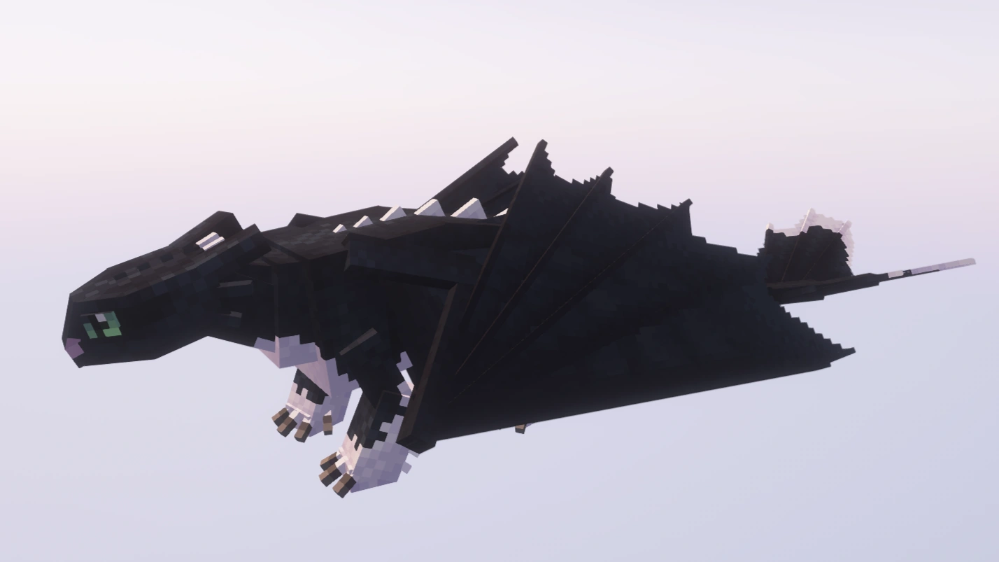
Variant 2
Ruffrunner
Sombre ; rejeton de Toothless
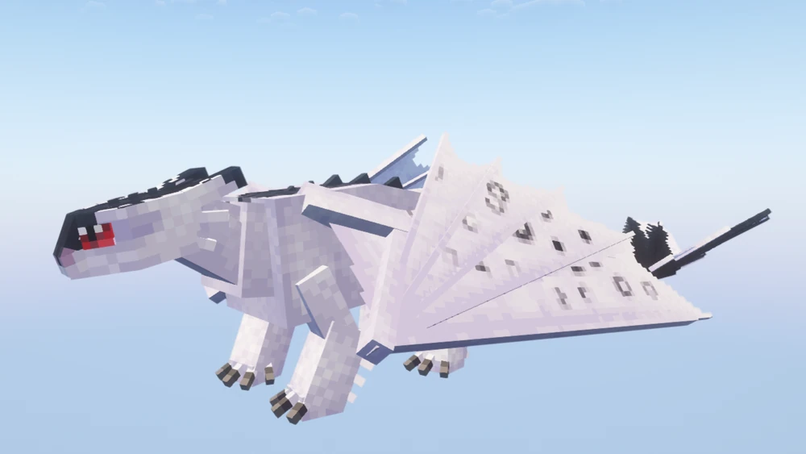
Variant 3
Leopard
Reproduction uniquement — non invocable via /summon
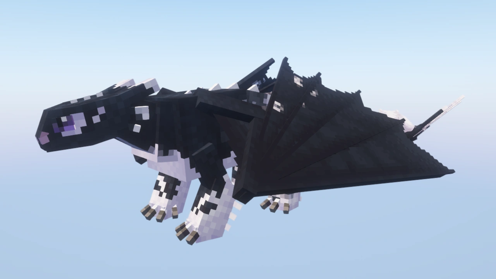
Variant 4
Dusk
Reproduction uniquement — non invocable via /summon
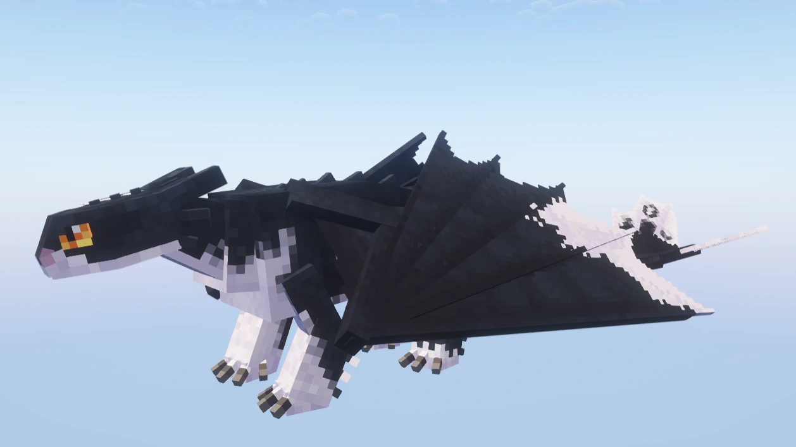
Variant 5
Appaloosa
Reproduction uniquement — non invocable via /summon
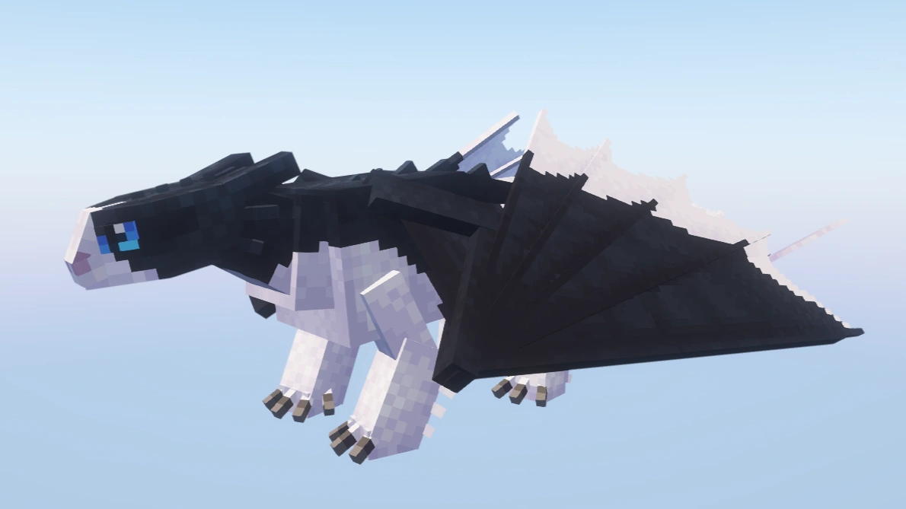
Variant 6
Skydancer
—
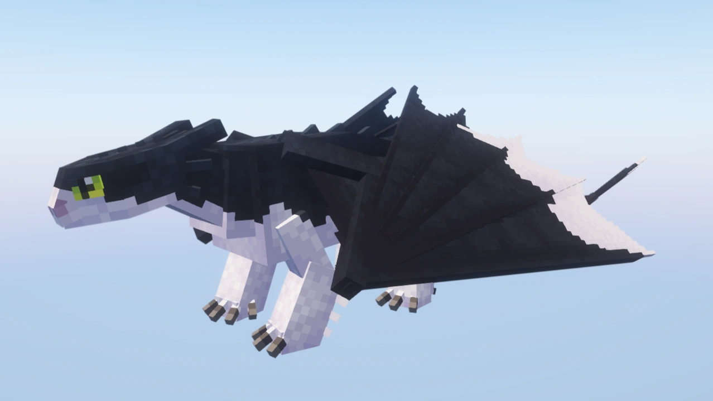
Variant 7
Nightdancer
Rare (poids 50)
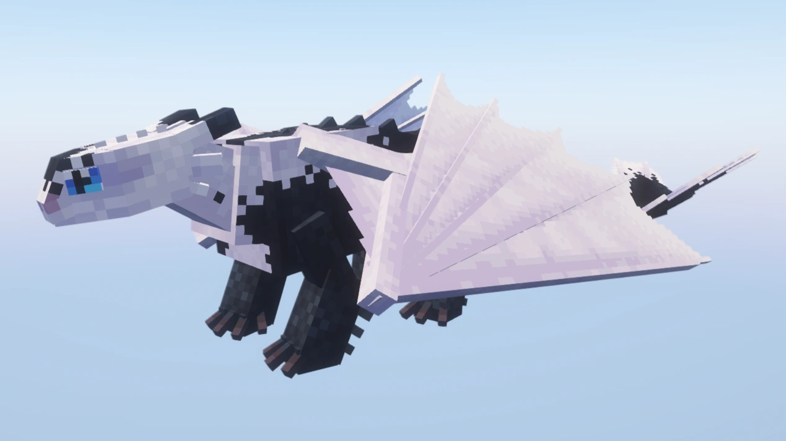
Variant 8
Iridescence
Rare (poids 10)
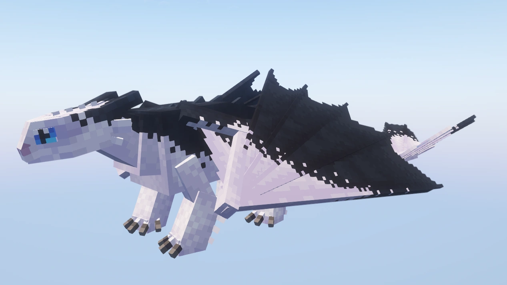
Variant 9
Ashwing
Rare (poids 3)
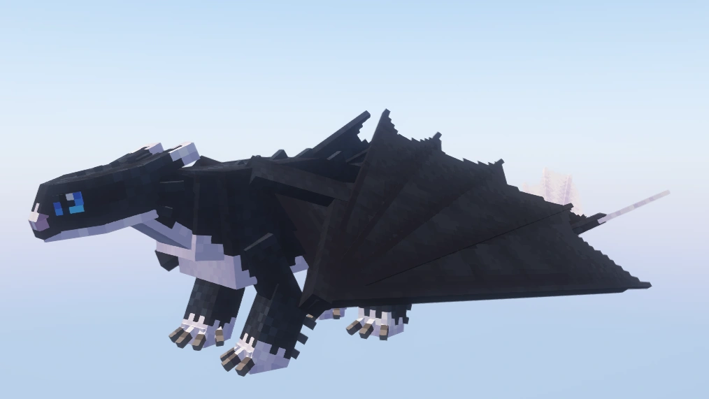
Variant 10
Dart
Rejetonne de Toothless — poids 0, non invocable via /summon
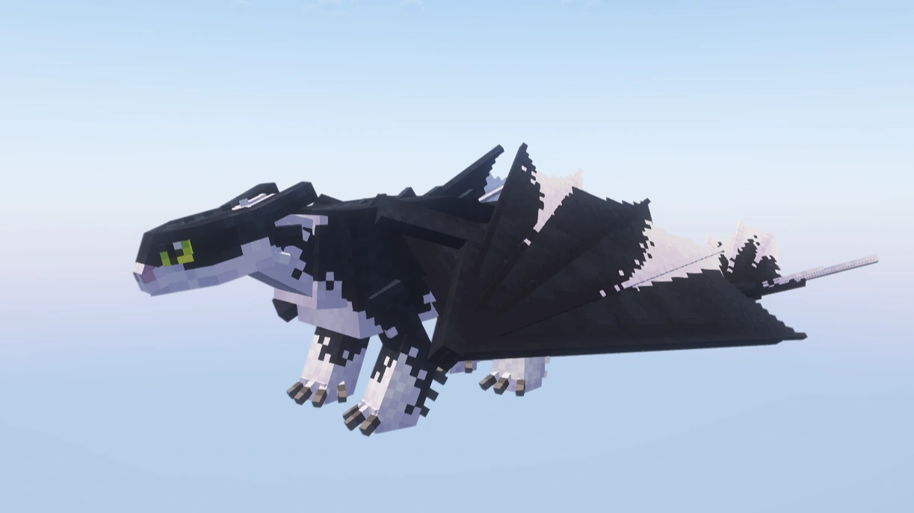
Variant 11
Harlequeen
Très rare (poids 1)
Trivia
§ 7- Seul dragon qui ne peut pas spawner naturellement — uniquement par reproduction.
- N'apparaît pas dans la config officielle du mod ni sur la page wix de GACMD.
- Variantes 7-9 et 11 (Nightdancer, Iridescence, Ashwing, Harlequeen) : rares à très rares, poids 50/10/3/1.
- Trois variantes nommées d'après les rejetons de Toothless dans le film 3 : Pouncer, Ruffrunner, Dart.
Commande /summon
§ 8/summon isleofberk:night_light ~ ~ ~ {variant:1}
Variantes 1-2 et 6-11 via /summon. Variantes 3-5 uniquement par reproduction naturelle.